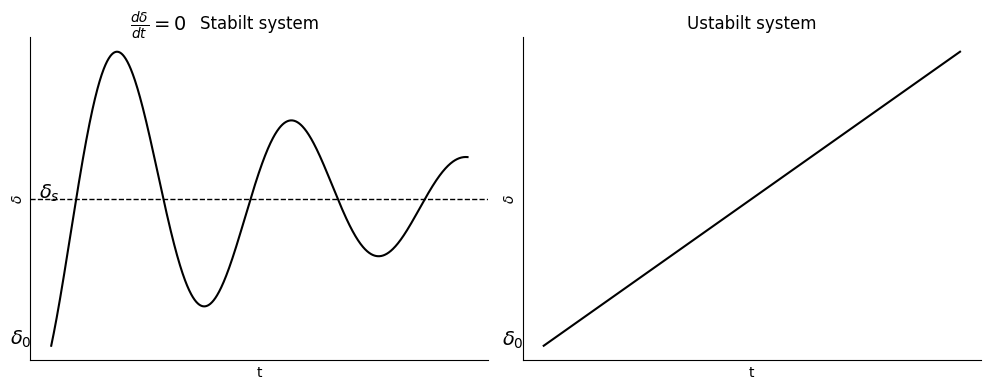
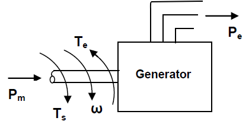

Transient Stabilitet#
I et kraftsystem er endringer vanligvis små og gradvise. Men enkelte hendelser kan forårsake store og plutselige forstyrrelser:
plutselige lastendringer
inn- og utkobling av linjer eller utstyr
bortfall av produksjon
kortslutningsfeil
Når slike hendelser oppstår, vil generatorenes rotorvinkler \(\delta\), rotasjonshastigheter \(\omega\) og den overførte effekten \(P_e\) endres raskt.
Ved små forstyrrelser vil generatorene normalt finne en ny stabil driftstilstand. Ved store forstyrrelser kan derimot rotorvinkelen øke så mye at generatoren mister synkronismen med resten av nettet. Generatoren sies da å falle ut av takt (out of step).
Denne typen ustabilitet kalles transient instability (transient ustabilitet).
Transient stabilitet studerer derfor om generatorene klarer å opprettholde synkron drift etter en stor og plutselig forstyrrelse.
Transient stabilitet#
Kortslutninger er blant de mest alvorlige forstyrrelsene i et kraftsystem. Under en feil reduseres den elektriske effekten fra generatorer nær feilstedet kraftig, mens fjerntliggende generatorer påvirkes mindre.
Generatorens dynamikk beskrives av svinge-ligningen:
Under feilen reduseres vanligvis \(P_e\), slik at rotoren akselererer og rotorvinkelen \(\delta\) øker.
Om systemet forblir stabilt avhenger av:
feiltype
feilplassering
feilvarighet (clearing time)
metode for feilutkobling
Ved alvorlige feil må feilen kobles ut raskt nok til at
hvor \(\delta_{cc}\) er den kritiske utkoblingsvinkelen.
Transient stabilitetsgrensen er vanligvis lavere enn steady-state stabilitetsgrensen og er derfor ofte den dimensjonerende stabilitetsfaktoren i kraftsystemer.
Mekanisk bakgrunn for transient stabilitet#
Transient stabilitet involverer både elektriske og mekaniske egenskaper ved synkrongeneratorer.
Etter en forstyrrelse må generatorenes rotorer endre sine relative vinkler for å oppnå en ny balanse mellom mekanisk inngangseffekt og elektrisk utgangseffekt.
Systemets oppførsel beskrives av swing-ligningen:
der
\(M\) er rotorens treghetskonstant
\(P_m\) er mekanisk tilført effekt
\(P_e\) er elektrisk avgitt effekt
\(\delta\) er rotorvinkelen
Kinetisk Energi (KE) og vinkelmoment (M)#
Den lagrede kinetiske energien i en synkronmaskin er
der
\(J\) er treghetsmomentet i \(MJ sek^2/elektriske grader^2\)
\(\omega\) er rotasjonshastigheten i \(elektriske grader/sek\)
\(M=J\omega\) er maskinens vinkelmoment
Siden
kan den kinetiske energien også skrives som
Treghetskonstanten \(H\) og vinkelmomentet \(M\)#
Treghetskonstanten \(H\) defineres som den lagrede kinetiske energien ved synkron hastighet per MVA merkestørrelse:
La G være nominell MVA:
Videre ome kinetisk energi:
Fra disse ligningene får vi
Når effekt er i pu, er G = 1.0 pu og dermed:
Treghetskonstanten \(H\) versus vinkelmomentet \(M\)#
Vinkelmomentet \(M\) avhenger både av maskintype og maskinstørrelse. Store generatorer har derfor vanligvis større \(M\) enn små generatorer.
Treghetskonstanten \(H\) er derimot den lagrede kinetiske energien per MVA merkestørrelse:
Siden \(H\) er normalisert med maskinstørrelsen, varierer den relativt lite for samme type maskin.
Dermed:
\(M\) avhenger av maskinens størrelse og type.
\(H\) avhenger hovedsakelig av maskintypen.
Maskiner innen samme klasse har ofte omtrent samme verdi av \(H\).
Dette gjør \(H\) til en praktisk parameter i transientstabilitetsanalyser, siden den beskriver maskinens treghet uavhengig av størrelsen.
Fysisk betydning#
Stor \(H\) ⇒ stor lagret rotasjonsenergi.
Stor \(H\) ⇒ rotorhastigheten endres langsommere ved en forstyrrelse.
Stor \(H\) ⇒ bedre transient stabilitet.
Maskiner med høy treghet akselererer derfor saktere når
og gir mer tid til at vern og brytere kan koble ut en feil.
# TEST CELL
import numpy as np
import matplotlib.pyplot as plt
# Tid
t = np.linspace(0, 10, 1000)
# Stabil respons (dempet oscillasjon)
delta_s = 1.0
delta0 = 0.3
delta_stable = delta_s + 0.9*np.exp(-0.15*t)*np.sin(1.5*t - 0.9)
# Ustabil respons
delta_unstable = delta0 + 0.15*t
fig, ax = plt.subplots(1, 2, figsize=(10, 4))
# Stabil
ax[0].plot(t, delta_stable, 'k')
ax[0].axhline(delta_s, color='k', linestyle='--', linewidth=1)
ax[0].set_xlabel('t')
ax[0].set_ylabel(r'$\delta$')
ax[0].set_title('Stabilt system')
# Marker første topp der dδ/dt = 0
idx = np.argmax(delta_stable[:300])
ax[0].text(t[idx]+0.3,
delta_stable[idx]+0.1,
r'$\frac{d\delta}{dt}=0$',
fontsize=14)
ax[0].text(-0.99, delta0, r'$\delta_0$', fontsize=14)
ax[0].text(-0.3, delta_s, r'$\delta_s$', fontsize=14)
# Ustabil
ax[1].plot(t, delta_unstable, 'k')
ax[1].set_xlabel('t')
ax[1].set_ylabel(r'$\delta$')
ax[1].set_title('Ustabilt system')
ax[1].text(-0.99, delta0, r'$\delta_0$', fontsize=14)
# Felles stil
for a in ax:
a.spines['top'].set_visible(False)
a.spines['right'].set_visible(False)
a.set_xticks([])
a.set_yticks([])
plt.tight_layout()
plt.show()

Svinge-ligningen#
Differensialligningen som beskriver sammenhengen mellom rotorvinkelen \(\delta\), vinkelmomentet \(M\) og akselererende effekt \(P_a\) kalles svinge-ligningen.
Løsningen av svinge-ligningen viser hvordan rotorvinkelen varierer med tiden etter en forstyrrelse.
Kurven som viser rotorvinkelen som funksjon av tiden,
kalles svinge-kurven.
Ved å studere svinge-kurven kan man avgjøre om kraftsystemet forblir stabilt eller mister synkronismen.

Effektbalanse i en generator#
En generator mottar mekanisk effekt, \(P_m\), fra turbinen via akselmomentet \(T_s\).
Generatoren leverer elektrisk effekt, \(P_e\) til kraftsystemet.
Samtidig utvikles et elektromagnetisk moment, \(T_e\), som virker mot akselmomentet.
Ved stasjonær drift gjelder\(T_s=T_e\). Forskjellen mellom disse er akselerasjon \(T_a=T_s-T_e\). Multipliserer med \(\omega\) på begge sider og får \(P_a=P_s-P_e\).
Generelt:
Relatert til svingeligningen kan vi utrykke Pa som:
og dermed
Rotoren roterer da med konstant synkron hastighet.
Admittansmodellen og sammenhengen med \(P_e = P_{\max}\sin\delta\)#
Admittansmodellen er den generelle nettverksmodellen som brukes før man gjør SMIB-forenklingen. I stedet for å representere nettet med én ekvivalent reaktans, beskrives hele kraftsystemet ved hjelp av admittansmatrisen \(Y_{bus}\).
For node \(k\) gjelder
der
\(Y_{ki}=G_{ki}+jB_{ki}\)
\(V_i=|V_i|\angle\delta_i\)
Den aktive effekten i node \(k\) kan skrives som
der
Dette er den generelle effektligningen basert på admittansmatrisen.
To-port-modell#
Etter Kron-reduksjon kan nettet ofte reduseres til to interne generatorspenninger
og
koblet sammen gjennom en ekvivalent admittans
Effekten fra maskin 1 blir da
Dette kalles ofte admittansmodellen eller to-port-modellen.
Overgang til SMIB-modellen#
Anta at forbindelsen mellom maskinene er en ren reaktans
Da blir admittansen
Dermed får vi
og
Setter vi dette inn i effektuttrykket:
Ved å bruke identiteten
får vi
Definisjon av maksimal effekt#
Den maksimale overførbare effekten defineres som
Dermed fås den klassiske kraftvinkelligningen
Sammenheng mellom modellene#
Uttrykket
er altså et spesialtilfelle av den generelle effektligningen når
nettet er tapsfritt (\(G=0\)),
spenningene \(|E'|\) og \(|V|\) antas konstante,
nettet kan representeres av én ekvivalent reaktans \(X_{eq}\).
Svingeligning med p_max#
\(P_a=P_m-P_e\).
Utledning av Equal Area Criterion#
Swing-ligningen for en generator koblet til en infinite bus kan skrives som
der
\(M\) = treghetskoeffisient
\(P_m\) = mekanisk effekt
\(P_e\) = elektrisk effekt
\(\Delta P\) = akselerasjonseffekt
Multipliser begge sider med
Da får vi
Ved å bruke kjerneregelen
kan ligningen skrives som
Bruk nå kjerneregelen
Da får vi
Integrasjon fra startvinkelen \(\delta_0\) til en vilkårlig rotorvinkel \(\delta\) gir
Siden
kan ligningen skrives som
Stabilitetsbetingelse#
For at generatoren skal forbli synkron må rotorvinkelen nå et maksimum og deretter begynne å avta.
Ved maksimal rotorvinkel gjelder
Setter vi dette inn i (2), får vi
Dette betyr at nettoarealet mellom kurvene \(P_m\) og \(P_e\) må være null.
Equal Area Criterion#
Akselerasjonsarealet er
Retardasjonsarealet er
Kravet til transient stabilitet er
Dette er kjent som Equal Area Criterion.
Fysisk tolkning#
Når \(P_m>P_e\), akselererer rotoren og kinetisk energi lagres.
Når \(P_e>P_m\), retarderer rotoren og den lagrede energien fjernes.
Systemet er stabilt dersom all energien som ble lagret under akselerasjonen fjernes under retardasjonen.
Grafisk betyr dette at akselerasjons- og retardasjonsarealene i \(P\)-\(\delta\)-diagrammet må være like store:
Fra ligning (20) har vi
Rotorvinkelen slutter å endre seg når maskinen igjen går med synkron hastighet, det vil si når
For at dette skal være oppfylt, må uttrykket under kvadratroten være null:
Siden \(M\) er en konstant, kan faktoren \(\frac{2}{M}\) trekkes utenfor integralet:
Dermed fås betingelsen
Dette betyr at nettoarealet mellom den mekaniske effekten \(P_m\) og den elektriske effekten \(P_e\) må være null.
Deler vi integralet inn i et akselerasjonsområde og et retardasjonsområde, får vi
der
er akselerasjonsarealet, og
er retardasjonsarealet.
Denne betingelsen er kjent som Equal Area Criterion.
Egenskap |
Steady-state stability |
Transient stability |
|---|---|---|
Type forstyrrelse |
Små og gradvise endringer |
Store og plutselige forstyrrelser |
Eksempler |
Gradvis lastøkning |
Kortslutninger, generatorutfall, linjeutkobling |
Analysefokus |
Nytt driftspunkt etter små endringer |
Rotorens dynamiske respons etter en feil |
Effektvinkel |
Små endringer i \(\delta\) |
Store utsving i \(\delta\) |
Stabilitetskriterium |
\(\frac{dP_e}{d\delta} > 0\) |
Equal Area Criterion eller swing-ligningen |
Effektmodell |
\(P_e = P_{\max}\sin\delta\) |
\(P_e = P_{\max}\sin\delta\) før, under og etter feil |
Kritisk grense |
\(\delta \approx 90^\circ\) |
\(\delta < \delta_{cc}\) |
Matematisk verktøy |
Statisk analyse |
Dynamisk analyse |
Dominerende ligning |
\(P_m = P_e\) |
\(M\frac{d^2\delta}{dt^2}=P_m-P_e\) |
Tidsskala |
Sekunder til minutter |
Millisekunder til omtrent 1 s |
Typisk spørsmål |
Hvor mye kan lasten økes før synkronismen mistes? |
Hvor lenge kan feilen stå før generatoren mister synkronismen? |